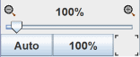
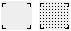

The Canvas
The canvas is really the most visible part of Liogisim-evolution is where you draw your circuits and their symbol to finally simulate the operation.

It is composed of only a few elements:
Horizontal and vertical scroll bars : They work as in most programs, just drag the sliders to move the view to other parts of the drawing. They can also be manipulated from the keyboard or mouse with the following combinations:
- Mouse wheel or keys up/down arrow : vertical scrolling
- Alt-Mouse wheel or keys right/left arrow: horizontal scrolling
- Key PgUp : go to the top of the page
- Key PgDn : go to bottom of page
Range indicators when the schematic is larger than the display area of the indicators are displayed. The guides displayed in the corners and / or on the sides indicate the directions where the drawing extends. Below is an example of the indicators on the top of the page.
The centering button  It places the center of the diagram in the center of the work surface.
It places the center of the diagram in the center of the work surface.
The zoom: At the bottom left is the control of the zoom factor. You can change it by dragging the cursor or using one of the two buttons to the left and right of the rate or with Ctrl - mouse wheel in the work area.

The button 100% :fits the zoom to display the diagram at its actual size.
The button Auto : fits the zoom so that the whole diagram is visible.
The grid button : On the right of the zoom, Toggle mode alternately "grid displayed" in the mode "invisible grid".
Next: The menus.